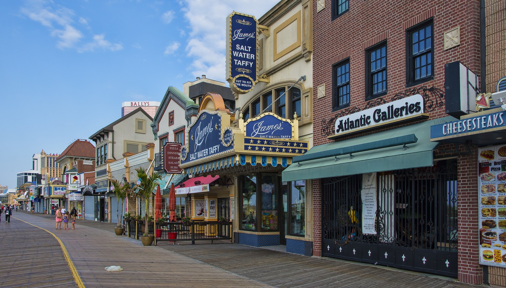

Visit New Jersey
The Garden State
The Garden State
Discover New Jersey
Where excitement never ends

New Jersey: Memories that last a lifetime
 Discover the charm of the Garden State, where history meets the shore and vibrant cities blend with scenic landscapes. From the iconic boardwalks to historic sites, New Jersey invites you to explore a tapestry of experiences. Embrace the diversity, savor the flavors, and create memories that linger longer than the sunset on the Jersey Shore. Welcome to New Jersey, where every moment is a journey waiting to be uncovered.
About NJ
New Jersey is situated on the East Coast of the United States, bordered by New York to the north and northeast, the Atlantic Ocean to the east, Delaware to the southwest, and Pennsylvania to the west. The capital of New Jersey is Trenton. New Jersey is one of the smallest states which covers 8,721 square miles (22,608 km²) however, it is one of the most densely populated states in the U.S (9,261,699 Source: US Census 2022). New Jersey has a robust and diverse economy. It is known for its pharmaceutical industry, telecommunications, financial services, and a strong presence in the technology sector. The state is also home to the Port of New York and New Jersey, one of the busiest ports in the country. (Source:https://www.britannica.com/)